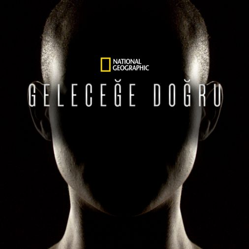

Merhaba ben Ezgi Başak Mert.Bu projeyi aldığım frontend eğitimi için yapıyorum.
Yapmış olduğum bu proje ilk ödevim. Şimdiye kadar etiketleri , kullanımlarını ve kısayolları öğrendim.
Geleceğe Doğru

Bölüm Özeti
Bir zamanlar bilim kurgu olarak algılanan şu anda gerçek olmaya doğru gidiyor. 6 bölümlük belgesel serisinde National Geographic insanoğlunun bir milyon yıl sonra nasıl olabileceğini öngörmeye çalışıyor. Günümüzün en başarılı bilim insanları, gelecek bilimcileri, uzmanlar ve bilim kurgu yazarları izleyicileri insanoğlunu geliştirecek ve hatta yapısını değiştirecek en yeni teknolojilerin, fikirlerin ve yeniliklerin içine sokuyor. Geleceğe doğru tipik bir Amerikan ailesinin gözünden insanlığın kaderinin ve geleceğinin nasıl olduğunu izleyiciye aktarıyor. Ailenin kızının android olduğu belgesel insanlık sırrının en ücra köşelerine giderek yapılan seçimler, gelinen nokta ve insanoğlunun uzun yıllar sonra dönüşeceği yapıyı sorguluyor. Bu belgeselde insan makine ile birleşiyor, zeka sınır tanımıyor ve en önemlisi insanoğlu gezegenlerarası yaşam formuna kavuşuyor.